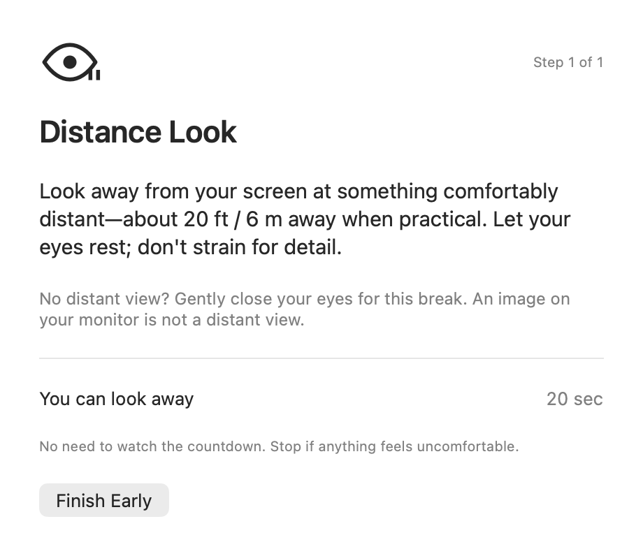

A little room in your screen day
Look away. Blink. Reset.
A quiet Mac menu-bar companion for regular screen breaks.
Choose a rhythm. Let a gentle reminder bring you back to the world beyond your screen.
US $7.99 paid upfront · planned launch price macOS 14.0 or later

No account. No subscription. No tracking.
The app works offline.
You decide when to begin.
A small, steady rhythm
Less watching the time.
More looking away.
Make it yours.
Start with a 20-minute work interval and a 20-second break, or choose a preset that fits your day.
A reminder, gently.
Your menu-bar eye lets you know when a break is ready. Enable native notifications if you would like a banner, too.
Take the moment.
Start a guided timer, snooze, or skip. No full-screen takeover. No penalty for being busy.

Read once. Then look away.
The break is yours.
A short instruction comes before the timer. Look into the distance, blink gently, close your eyes, or step away when it is safe.
Sounds are optional. You can finish early or pause at any time.
See the activity guideQuiet by choice
Your schedule.
Your control.
Optional local history records app activity, not where you looked or how your eyes felt.
Local history starts off. Turn it on if you find a small record useful, and clear it whenever you choose.
Read the privacy policy